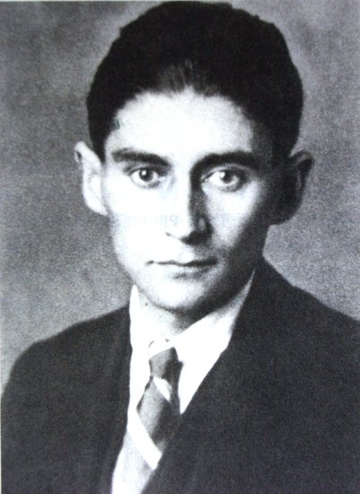
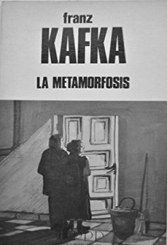
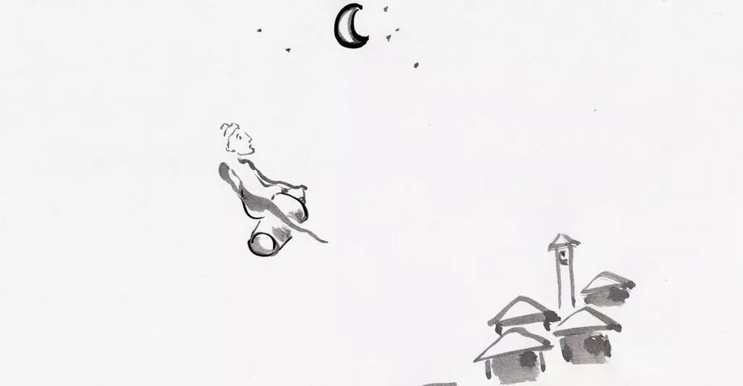
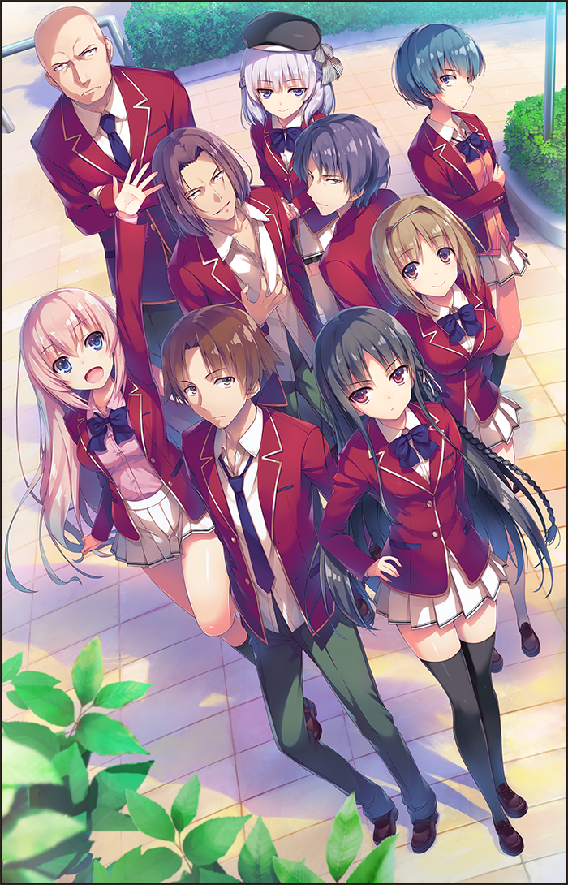
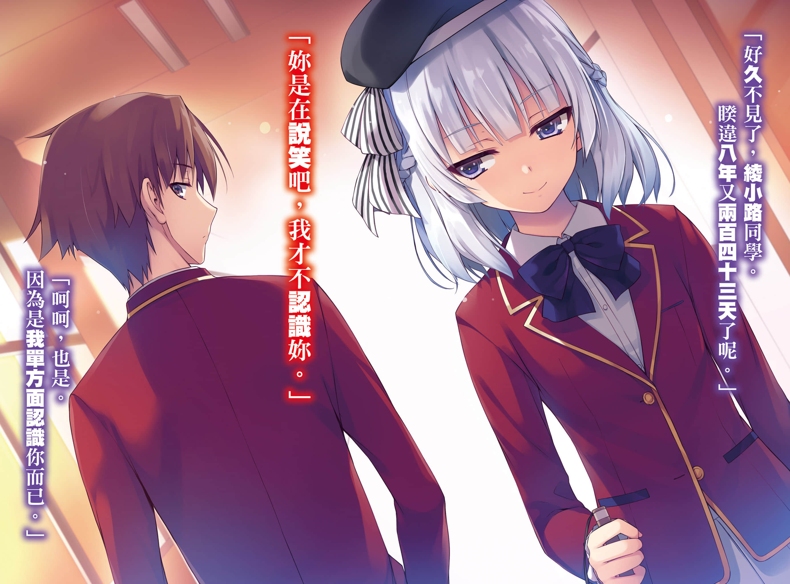
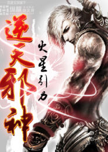
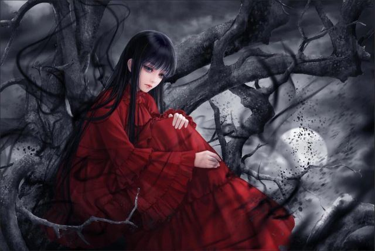

| TQL'index | Home | Genshin Impact | Animation | Novel | Favorite character | dormitory index |
|---|
| 文学： |
|---|
|  | 弗兰兹·卡夫卡（Franz Kafka，1883年7月3日—1924年6月3日），生活于奥匈帝国（奥地利帝国和匈牙利组成的政合国）统治下的捷克德语小说家，本职为保险业职员。主要作品有小说《审判》《城堡》《变形记》等。卡夫卡1883年出生犹太商人家庭，18岁入布拉格大学学习文学和法律，1904年开始写作，主要作品为四部短篇小说集和三部长篇小说。可惜生前大多未发表，三部长篇也均未写完。他生活在奥匈帝国即将崩溃的时代，又深受尼采、柏格森哲学影响，对政治事件也一直抱旁观态度，故其作品大都用变形荒诞的形象和象征直觉的手法，表现被充满敌意的社会环境所包围的孤立、绝望的个人。 卡夫卡与法国作家马赛尔·普鲁斯特，爱尔兰作家詹姆斯·乔伊斯并称为西方现代主义文学的先驱和大师。 |
本人非常喜欢卡夫卡利用精妙绝伦的比喻、象征来影射社会现实，比喻越荒谬，越能展现现实社会的灰暗。他的小说如大音希声，让所有人都听到，所有人都受教。 在卡夫卡的感受中，世界是荒诞的、可怖的、令人痛苦和绝望的。卡夫卡小说中那种滞重、淡漠和沉闷的气氛，和这样的一个世界正相对应。看到他为我们描绘出的一幅幅画卷我们会感到一阵阵震惊和恐惧，因为他仿佛在为人类的明天敲起阵阵急促的警钟，他为人类的未来担忧。 喜欢的作品：《骑桶者》《在流放地》《变形记》  |
|---|
| （日本）轻小说： |
|---|
|  | 欢迎来到实力至上主义的教室》是轻小说作家衣笠彰梧著作，插画家知世俊作负责插画，MF文库J所属的轻小说。 作品曾获“这本轻小说真厉害！”2018年第19名和“这本轻小说真厉害！”2019年第6名的成绩。 几乎百分之百实现升学与就业的全国首屈一指的名校──高度育成高中。这间学校使用了最先进的设备，而且每个月还会给予学生价值10万日元的点数，也允许自由选择发型和携带私人物品。简直就是一个乐园般的学校。 |
本人很喜欢该作中的智斗情节，即主角绫小路清隆以自己的方式在学校的一次次特别活动中做出应对，以及别班的领袖坂柳有栖、一之濑帆波、龙园翔、来自白色房间的“刺客”、学生会长南云雅等人与主角进行的博弈。以旁观者的视角了解他们的竞争，不仅可以起到开阔视野的作用，也会引起我对“实力”、“成长”、“人际关系”等主题的思考，使得我在待人接物方面有所启示。  |
|---|
| 网络小说： |
|---|
|  | 《逆天邪神》是网络作家火星引力创作的东方玄幻类网络小说，首发于纵横中文网。小说主要讲述一代少年云澈继承邪神之血，走上了逆天之途的故事。 |
作为一种经典的男主一路升级君临天下的网络爽文，《逆天邪神》出人意料的加入了较好的文笔与剧情，你可以想象到每个打斗、交流的场景，每个角色都用恰到好处的笔墨描写，个性鲜明。伏笔的大量应用更使得剧情具有讨论推敲的空间，当二刷、三刷时会让读者恍然大悟，“原来这是个伏笔。”这是读者和作者的博弈。 但是，该小说由于作者不定期的断更，完结之日遥遥无期。 |
 |
|---|